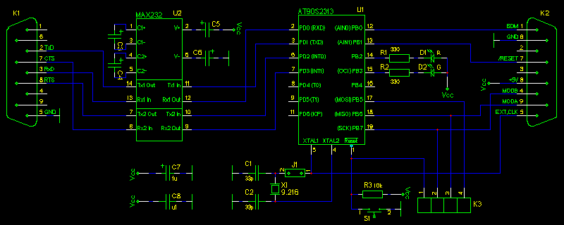
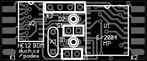
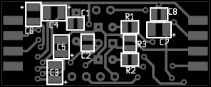
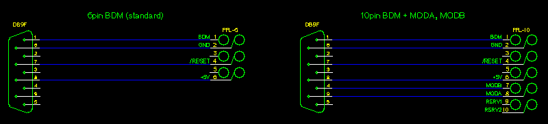
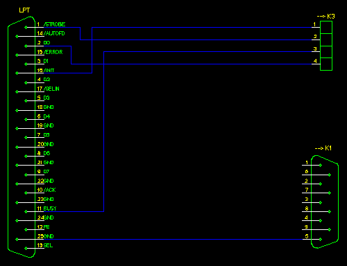

Schematics
To connect a wire on one side and RS232 on the other to the MCU is
almost as difficult as to connect a bulb to battery in a torch.
|  |
| Schéma zapojení podexu |
RS232 signals TxD, RxD, RTS, CTS (in schematics marked from podex'
point of view) are connected to AVR MCU via buffer U2, MAX232. In
prototype, there has been used "worse" variant MAX232 (no A suffix),
which may require 1uF capacitors around it (on PCB the size 1206 was
chosen). Thay can be tantalum, but they are also available in ceramic
with this capacity (wow, that progress... on Taiwan they are really
working hard). Connector K1 can be plugged directly to the COM-port of
IBM PC. LEDs D1, D2 acts as indicators of activity and error state and
also can be controlled by software of control computer. There are
signals MOSI, MISO and SCK of serial programming interface of AVR and
its /RESET signal available on connector K3, which serve (together with
GND potential from K1 or K2) as an interface for programming FLASH of
AVR by podex firmware. PCB allows connecting a switch S1 for resetting
AVR, but this shoudln't be needed. Clock for AVR is obtained from
crystal X1 with the most desirable frequency of 9.216MHz -- maximal
supported rate for 5V AT90S2313 is 10MHz and 9.216MHz is the nearest
lower rate, which allows precise division to 115200b/s serial transfer.
Crystal is connected through point J1, which should be disconnected and
then get clock from external source via connector K2, for example from
EClock signal of HC12 CPU. Connector K2 is to be connected to BDM, and
among this external clock contains three-state signal BDM(BKGD), signal
/RESET and software controlled lines MODA, MODB, allowing use of extended
memory (bus) of HC12 CPU.
Construction
Podex has been designed on two-sided PCB with SMD components mounted
on both sides. The most narrow distance between conductors is cca. 0.2mm,
but some very kind people at one
PCB laboratory, which officialy supports only spaces greater than 0.25mm,
made boards of podex in a perfect quality. Board has to be put
to a cover of two connectors Canon DB9. It is placed between pins of
these connectors and surface soldered to these pins (which are ordinary
used for soldering with cable wires). Connectors are used this way to
hold a board in position. Connector K1 is female, according to RS232
connection, K2 is male to avoid their swapping. LEDs are round with 3mm
diameter, if they will be used, it would be very nice to drill holes
for them in a cover. As a programming connector K3 I have used
SIL (single-in-line) sockets, available as a line, which can be broken to
smaller pieces. Pay attention for this
component not to be too much thick to fit in a cover. J1 can be hardly
connected by a wire, if you won't use external clock (otherwise, let it
disconnected). You will pobably never need a S1 switch. If you can't
use PCB of this layout or you can't order fabrication of it, you can
build the circuit on a universal PCB -- it is very simple.
"Printed" circuit board
|
|
|  |
| components placement (upper side) |
|
|  |
| components placement (lower side) |
|
|
|
List of components
|
oznaèení
|
typ
|
pouzdro
|
hodnota
|
| U1 |
AT90S2313 |
SO20W |
|
| U2 |
MAX232 |
SO16 |
|
| K1, K2 |
DB9 |
DB9SM |
|
| D1 |
LED |
LED_3mm |
R |
| D2 |
LED |
LED_3mm |
G |
| C1, C2 |
CAPACITOR |
0805 |
33p |
| C8 |
CAPACITOR |
0805 |
u1 |
| R1, R2 |
RESISTOR |
0805 |
330 |
| R3 |
RESISTOR |
0805 |
10k |
| S1 |
SWITCH_PUSHBUTTON_NO |
JUMPER2 |
|
| X1 |
CRYSTAL |
HC49 |
9.216MHz |
| J1 |
JUMPER |
JUMPER2 |
|
| C3, C4, C5, C6, C7 |
CAPACITOR |
1206 |
1u |
| K3 |
HEADER3 |
JUMPER4 |
|
Podex box is connected to control computer by direct plugging it to
RS232 DB9 connector or by a cable, which must contain signals RTS and
CTS. For BDM interface, there is a standardized 6pin connector,
recommended by HC12 documentation, for use of lines MODA, MODB there is
its 10pin extension. Pinout of K2 connector is chosen to allow direct
interconnection of self-cutting DB9 connector on the podex side and 6(10)pin
self-cutting connector PFL on the other side of AWG cable.
|  |
| BDM connectors connection |

Firmware flashing
Firmware is loaded to FLASH of AVR AT90S2313 via connector K3. For
this it is sufficient to connect serial programming interface signals
to parallel interface LPT/Centronics according to following schematic,
widely used in AVR community and known as a "Direct AVR Parallel
Access":
|  |
| Zapojení programátoru AVR pøes LPT |
Attention, there should be also conected a ground of podex (GND) to
a control computer during programing, using a connector K1. Also it is
needed to power flashed podex by 5V source via K2 connector (it is
possible to power it from a HC12 board, if there aren't used lines
MODA, MODB).
With above mentioned parallel port connection there can be
used eg. flashing software uisp.
The firmware is then loaded eg. by
command
uisp -dlpt=0x378 -dprog=dapa --erase --upload --verify if=podex.hex -v=3 --hash=12
|
(0x378 is LPT base address, podex.hex is filename of the firmware, for more
see uisp docs). After loading of firmware the podex is finished and ready to
operate with HC12.